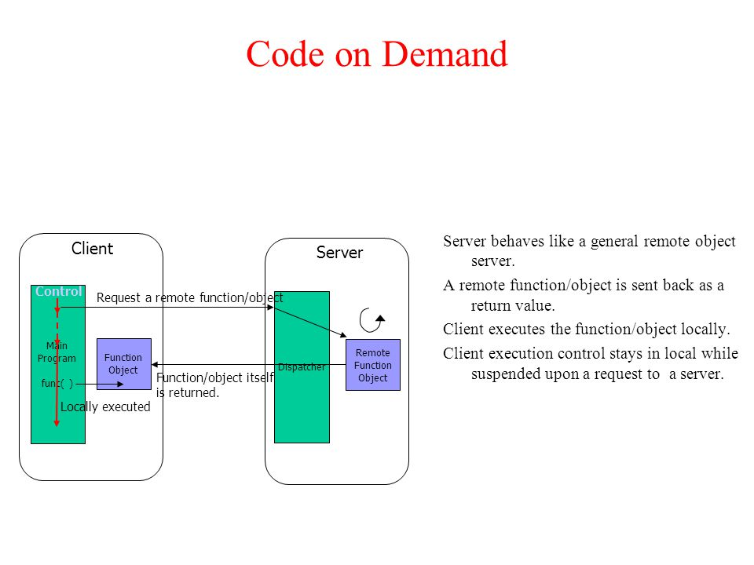

What is Code On Demand?
In distributed computing, code on demand is any technology that sends executable software code from a server computer to a client computer upon request from the client's software.
The program code lies inactive on a web server until a user (client) requests a web page that contains a link to the code using the client's web browser. Upon this request, the web page and the program are transported to the user's machine using HTTP. When the page is displayed, the code is started in the browser and executes locally, inside the user's computer until it is stopped (e.g., by the user leaving the web page).
(Wikipedia contributors. "Code on demand." Wikipedia, The Free Encyclopedia. Wikipedia, The Free Encyclopedia, 18 Feb. 2022. Web. 12 Apr. 2022.)
The flow chart of COD
Local Example
Example1:Itype.js
This is a local example of COD. From the above picture we can see the local execuable code of this animation. In our local code, there is no code to implement the animation logic. Whenever this page is loaded, the code from the remote server is loaded locally and executed
Usage&Effect:
The src attribute of the script tag introduces ityped, as an external js which has been written on the remote server, so that we can directly call the ityped function to set and implement the animation effect of the span tag in our local code.This function allows to enter in any String, and it will be typed at the speed you've set, backspace what it's typed, and begin a new sentence for however many strings you've set.
Example2:Codepen
This is a typical example of COD. I didn't write any code to draw an interactive phone screen, but when this page is loaded, the code (including html, CSS and js) from remote server will be sent and executed locally.
It will be executed until this page is closed.
Usage&Effect:
When you click the "Run Pen" button, an interactive phone interface appears. If you scroll, different food labels will be displayed; When you click on one of them, a spring animation will be triggered and displayed.
Pros And Cons of COD
Pros
There are three main advantages.
- The actual implementation does not require significant engineering difficulties.
From a mere execution standpoint, the essence of the code on demand paradigm can be supported by an interpreter equipped with a networked dynamic loader. This technology is well-understood, and today well-supported by mainstream platforms (e.g., Java and .NET). - It intrinsically fosters good load balancing properties.
Indeed, client-server places the burden for computation entirely on the server, which holds the resources and know-how necessary to the service. - Extensibility and configurability.
Code-on-demand includes the ability to add features to a deployed client, which provides for improved extensibility and configurability.
Cons
There are three main disadvantages.
- Simplicity.
It requires to manage the evaluation environment, which will reduce the simplicity. - Restriction.
Because code ultimately runs on the client side, its efficiency is limited by the client side - Visibility.
The lack of visibility due to the server sending code instead of simple data. Lack of visibility leads to obvious deployment problems if the client cannot trust the servers.